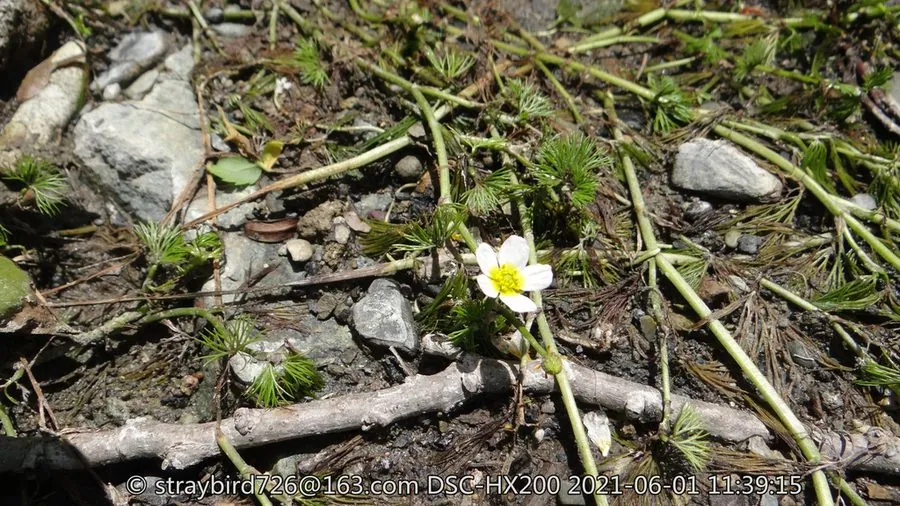

水生植物 · 植物界
水毛茛 Batrachium bungei

毛茛科水毛茛属多年生沉水草本，叶片细裂如丝，开白色小花，生于清澈溪流和池塘，是水质良好的指示植物。
- 分类
- 门被子植物门纲木兰纲目毛茛目科毛茛科属水毛茛属
- 栖息环境
- 清澈的溪流、池塘和湖泊浅水区，喜凉爽流动的清水
- 地理分布
- 中国南北各地，朝鲜、日本等地也有分布
- 保护级别
- 暂无评估
物种志
水毛茛为毛茛科水毛茛属的多年生沉水草本，茎细长，长 20–60 厘米，分枝。叶片沉水，三至四回细裂，裂片丝状，长 1–3 厘米，靠细裂的叶片在水中吸收养分和承受水流。花单生，挺出水面，白色，花瓣 5 枚，直径约 1 厘米，花期 5–8 月；果实为瘦果。
水毛茛分布于中国南北各地的清澈溪流、池塘和湖泊浅水区，喜凉爽、阳光充足和流动的清水，对水质污染敏感，常作为水质良好的指示植物。它叶片细裂如丝，在水中随波摇曳，开花时白色小花挺出水面，具有观赏价值。栽培以茎段扦插和分株为主，需保持水质清洁和适当水流；野生种群因水体污染和栖息地破坏而减少，应加以保护。
形态与习性
- 株高茎长 20–60 厘米，沉水
- 叶片三至四回细裂，裂片丝状
- 花期5–8 月，花白色、挺出水面
- 水深浅水至 1 米左右
- 水质要求清澈、流动的洁净水体
- 光照喜充足阳光
- 繁殖茎段扦插、分株
- 指示对污染敏感，可指示水质
趣味知识
- 水毛茛的叶片细裂成丝状，能在流水中减少阻力。
- 它对水质污染敏感，常被用作水质良好的指示植物。
- 水毛茛的花挺出水面开放，白色小花与丝状叶片形成对比。